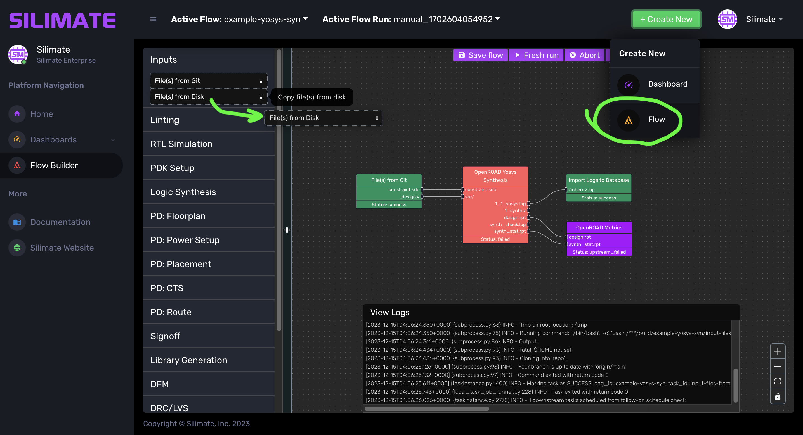
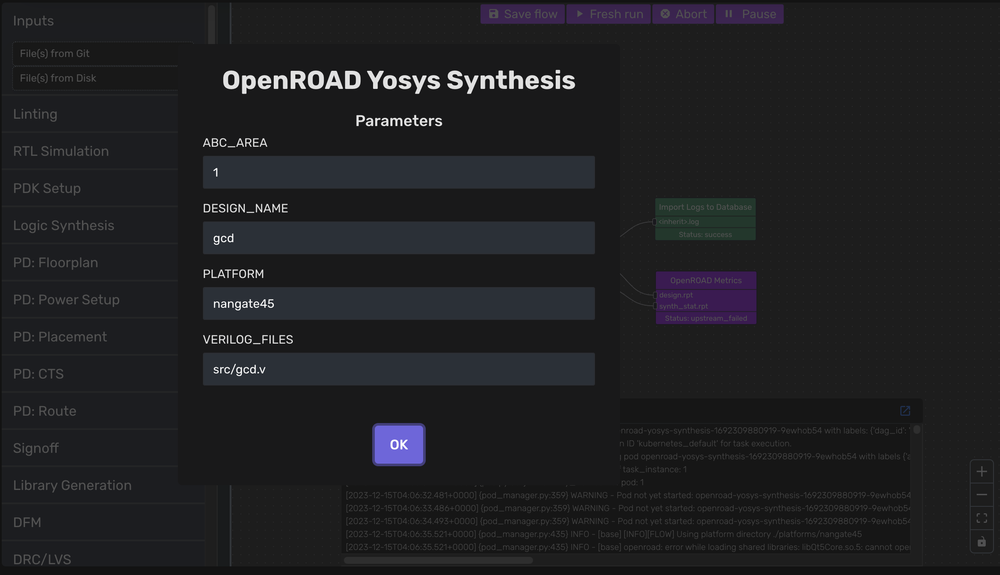

Flow Building
Here, we will discuss building a flow from discrete steps and connecting dependencies to get everything working.
Philosophy
Flows are composed of a series of steps that can be parametrized. Steps have file/directory inputs, and perform computation on these to yield file/directory outputs that can be routed to other step inputs to form a directed acyclic graph (DAG).
Silimate aims to provide a toolbox with the most common EDA tool functionalities encapsulated cleanly. It aims for "separation of concerns," splitting design-specific, PDK-specific, and tool-specific settings into different modules to allow for maximal flow reuse. With this toolbox, simple flows can be quickly constructed and executed, while capturing metrics and design collateral cleanly.
Flow Building (Web)
We will start with a guide on flow building from the web interface. A description of the generated flow JSON files is in Advanced: Flow Building (Flow Files). These JSON-based flow files can be developed programmatically as needed for dynamic flow behavior.

Create New Flow
To create a new flow, click on "+ Create New" in the navigation bar. Select "Flow" from the dropdown menu. See screenshot above.
Saving a Flow
Use the "Save flow" button in the top panel to save.
Step Library
The step library is located as a panel on the left-hand side of the flow builder. See screenshot above.
Steps are grouped by function based on which EDA stage they are related to. You can click to see which steps are in each category, then drag and drop desired steps onto the flow to create step nodes.
Descriptions of the built-in steps are in Built-In Step Descriptions.
Connecting Step Dependencies
Drag an edge between an output of one step X and an input of another step Y to define a file/directory dependency from step X to Y. File types between edges must be the same for the edge to be allowed.
If the file names between steps are exactly the same, you can also right-click on a cell which has missing edges and click on "Autoconnect Inputs" shortcut to save time. This will try to automatically infer and add edges based on common names between steps.
Parametrized Steps
Right-click and click on "Step Settings" to edit parameters of the step. Double clicking a step will also open the dialog box.

Advanced: Flow Building (Flow Files)
The best way to understand the flow file structure is to look at one. Flows are located in /silimate/flows/ directory (best practice is to version control this!) and consist of <flow-name>.flow and <flow-name>.pos.
<flow-name>.flow
{
"nodes": [
{
"id": "log-importer-1692309904268",
"type": "log-importer"
},
{
"id": "openroad-metrics-1692309893709",
"type": "openroad-metrics"
},
{
"id": "openroad-yosys-synthesis-1692309880919",
"type": "openroad-yosys-synthesis"
},
{
"data": {
"git_branch": "main",
"git_clone_depth": "1",
"git_commit": "HEAD",
"git_url": "https://github.com/silimate/designs",
"inputMappings": {
"constraint.sdc": "gcd/constraint.sdc",
"design.v": "gcd/gcd.v"
}
},
"id": "input-files-from-git-1692309848356",
"type": "input-files-from-git-1692309848356"
}
],
"edges": [
{
"id": "autoconnect__openroad-metrics-1692309893709-synth_stat.rpt-openroad-yosys-synthesis-1692309880919-synth_stat.rpt",
"source": "openroad-yosys-synthesis-1692309880919",
"sourceHandle": "synth_stat.rpt",
"target": "openroad-metrics-1692309893709",
"targetHandle": "synth_stat.rpt"
},
{
"id": "autoconnect__openroad-metrics-1692309893709-design.rpt-openroad-yosys-synthesis-1692309880919-design.rpt",
"source": "openroad-yosys-synthesis-1692309880919",
"sourceHandle": "design.rpt",
"target": "openroad-metrics-1692309893709",
"targetHandle": "design.rpt"
},
{
"id": "autoconnect__openroad-yosys-synthesis-1692309880919-constraint.sdc-input-files-from-git-1692309848356-constraint.sdc",
"source": "input-files-from-git-1692309848356",
"sourceHandle": "constraint.sdc",
"target": "openroad-yosys-synthesis-1692309880919",
"targetHandle": "constraint.sdc"
},
{
"id": "autoconnect__openroad-yosys-synthesis-1692309880919-src/-input-files-from-git-1692309848356-design.v",
"source": "input-files-from-git-1692309848356",
"sourceHandle": "design.v",
"target": "openroad-yosys-synthesis-1692309880919",
"targetHandle": "src/"
},
{
"id": "reactflow__edge-openroad-yosys-synthesis-16923098809191_1_yosys.log-log-importer-1692309904268<inherit>.log",
"source": "openroad-yosys-synthesis-1692309880919",
"sourceHandle": "1_1_yosys.log",
"target": "log-importer-1692309904268",
"targetHandle": "<inherit>.log"
}
]
}
Above, you can see that the .flow file consists of a map with "nodes" and "edges." Nodes are steps and edges correspond to links between files/directories across two steps.
A node has an "id" (a unique identifier for the step), a "type" (the step type), and "data" (the set of parameters associated with the step). Input steps also define a list of mappings between paths and file/directory names, more details can be found in Input Steps.
An edge has an "id" (a unique identifier for the dependency), a "source" (step providing the dependency), a "sourceHandle" (output file/directory being provided), a "target" (step receiving the dependency), and a "targetHandle" (output )
<flow-name>.pos
{
"nodes": [
{
"width": 150,
"height": 64,
"id": "log-importer-1692309904268",
"position": {
"x": 585,
"y": 218
},
"positionAbsolute": {
"x": 585,
"y": 218
}
},
{
"width": 150,
"height": 80,
"id": "openroad-metrics-1692309893709",
"position": {
"x": 586,
"y": 326
},
"positionAbsolute": {
"x": 586,
"y": 326
}
},
{
"width": 150,
"height": 176,
"id": "openroad-yosys-synthesis-1692309880919",
"position": {
"x": 350,
"y": 200
},
"positionAbsolute": {
"x": 350,
"y": 200
}
},
{
"width": 150,
"height": 80,
"id": "input-files-from-git-1692309848356",
"position": {
"x": 108,
"y": 218
},
"positionAbsolute": {
"x": 108,
"y": 218
}
}
],
"viewport": {
"x": 7,
"y": 42,
"zoom": 1
}
}
Above, you can see that the .flow file consists of a map with "nodes" and a "viewport."
The "nodes" have the "id" (unique identifier of the step), {"width", "height"} (dimensions of the node), and {"position", "positionAbsolute"} (relative/absolute position of the node). The node dimensions and position are optional, as they are recomputed on load anyways.
The "viewport" simply specifies the default zoom and target area.